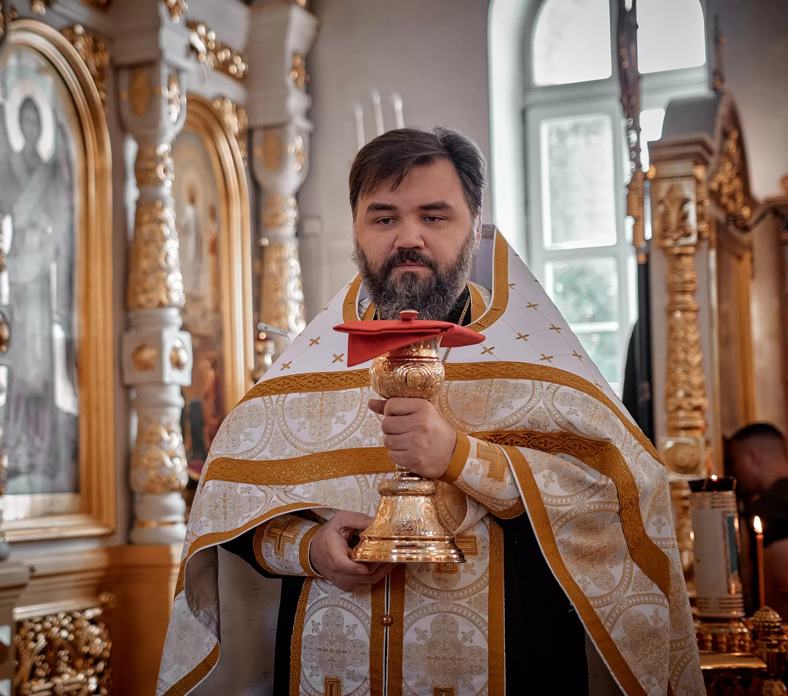

Таинства и требы
Записаться можно в церковной лавке, по телефону +7 (916) 450-53-90 или через форму ниже — мы перезвоним и всё подскажем.
Крещение
Перед Крещением родители и крёстные проходят огласительные беседы — о вере, о Таинстве и об обязанностях восприемников. Время бесед уточняйте в церковной лавке или по телефону.
С собой понадобятся крестик, крестильная рубашка и полотенце. Крёстные должны быть православными и крещёными.
Венчание
Венчаются супруги, брак которых уже зарегистрирован в ЗАГСе. Перед Таинством — беседа со священником, исповедь и причастие. Дату лучше согласовать заранее: венчание не совершается в посты, на Святки, в Светлую седмицу и накануне некоторых праздников.
Отпевание
Дату и время отпевания согласуйте по телефону храма. Поможем с советом, что нужно подготовить.
Освящение
Священник освятит квартиру, дом, машину или другое — дату и время согласуйте по телефону или через форму.
Соборование
Таинство Елеосвящения совершается в храме во время многодневных постов. Расписание соборований публикуется в группе ВКонтакте.
Исповедь и причастие
Исповедь — накануне, во время вечернего богослужения в 17:00, и утром перед литургией с 8:40. Если вы впервые, подойдите к священнику и скажите об этом — вам помогут.